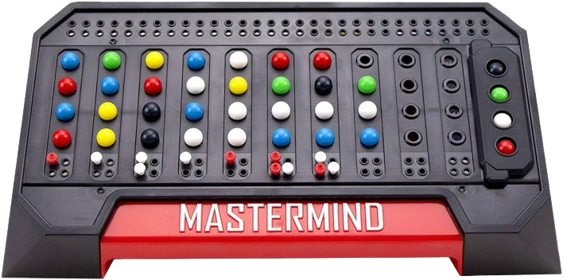

mastermind

Mastermind è un gioco in cui bisogna indovinare una sequenza di 4 numeri che vanno da 0 a 9 (compresi 0 e 9 e la ripetizione di uno stesso numero) intervallati da uno spazio. Una volta scritta la sequenza, il software dirà quanti sono i numeri corretti nella posizione giusta e quelli corretti nella posizione sbagliata, se la sequenza è sbagliata si potrà riprovare fino ad esaurire i 10 tentativi a disposizione.